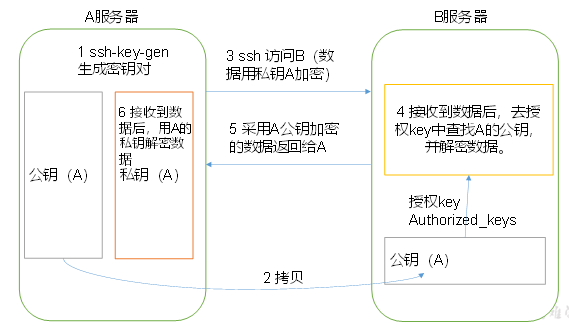
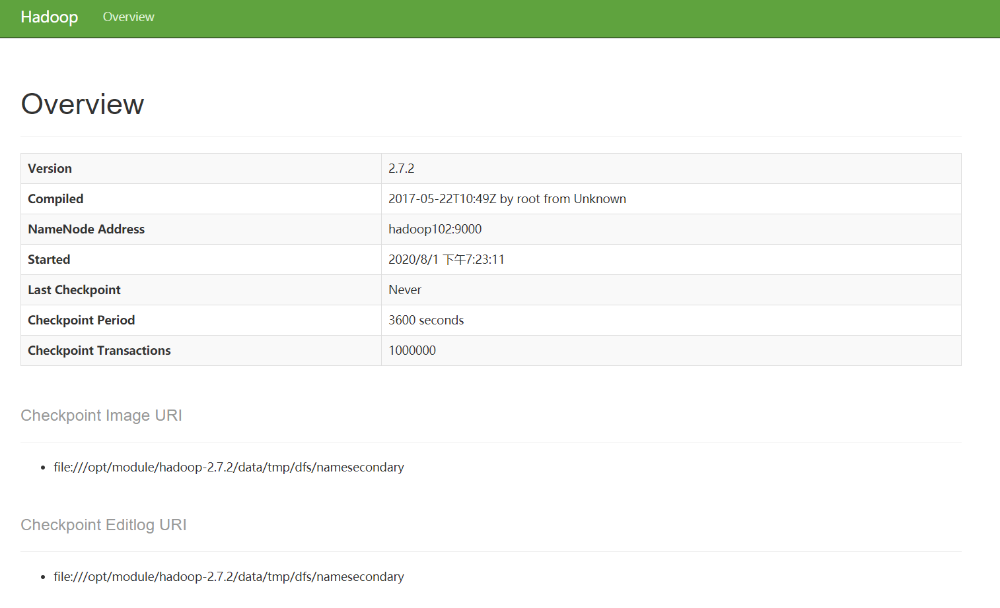

Hadoop运行模式
完全分布式模式
前提需要
准备3台客户机（关闭防火墙、静态ip、主机名称）
安装JDK
配置环境变量
安装Hadoop
配置环境变量
配置集群
单点启动
配置ssh
群起并测试集群
虚拟机准备就绪
操作步骤
集群环境搭建
1. 编写集群分发脚本xsync
（1）scp（secure copy）安全拷贝
scp：scp可以实现服务器与服务器之间的数据拷贝。（from server1 to server2）
当集群达到一定规模之后，我们不可能一台台机器去拷贝所需要的文件之类的，因此需要用到这个。
（2）基本语法：
scp -r $pdir/$fname $user@hadoop$host:$pdir/$fna
命令 递归 要拷贝的文件路径/名称 目的用户@主机:目的路径/名称（3）案例实操
在hadoop101上，将hadoop101中/opt/module目录下的软件拷贝到hadoop102上。
scp -r /opt/module root@hadoop102:/opt/module在hadoop103上，将hadoop101服务器上的/opt/module目录下的软件拷贝到hadoop103上。
sudo scp -r user_test@hadoop101:/opt/module root@hadoop103:/opt/module因为最开始103上的opt，user_test没有权限，所以要用root@xxx
在hadoop103上操作将hadoop101中/opt/module目录下的软件拷贝到hadoop104上。
scp -r user_test@hadoop101:/opt/module root@hadoop104:/opt/module注意：拷贝过来的/opt/module目录，别忘了在hadoop102、hadoop103、hadoop104上修改所有文件的，所有者和所有者组（sudo chown user_test:user -R /opt/module）
将hadoop101中/etc/profile文件拷贝到hadoop102的/etc/profile上。
sudo scp /etc/profile root@hadoop102:/etc/profile将hadoop101中/etc/profile文件拷贝到hadoop103的/etc/profile上。
sudo scp /etc/profile root@hadoop103:/etc/profile将hadoop101中/etc/profile文件拷贝到hadoop104的/etc/profile上。
sudo scp /etc/profile root@hadoop104:/etc/profile注意：拷贝过来的配置文件别忘了source一下/etc/profile。
2. rsync 远程同步工具
rsync主要用于备份和镜像。具有速度快、避免复制相同内容和支持符号链接的优点。
rsync和scp区别：用rsync做文件的复制要比scp的速度快，rsync只对差异文件做更新。scp是把所有文件都复制过去。
（1）基本语法
rsync -rvl $pdir/$fname $user@hadoop$host:$pdir/$fname
命令 选项参数 要拷贝的文件路径/名称 目的用户@主机:目的路径/名称参数说明：
| 选项 | 功能 |
|---|---|
| -r | 递归 |
| -v | 显示复制过程 |
| -l | 拷贝符号连接 |
（2）案例实操
a）把hadoop101机器上的/opt/software目录同步到hadoop102服务器的root用户下的/opt/目录
rsync -rvl /opt/software/ root@hadoop102:/opt/software3. xsync集群分发脚本
（1）需求：循环复制文件到所有节点的相同目录下
（2）需求分析：
a）rsync命令原始拷贝：
rsync -rvl /opt/module root@hadoop103:/opt/b）期望脚本：
xsync要同步的文件名称c）说明：在 /home/user_test/bin 这个目录下存放的脚本，user_test用户可以在系统任何地方直接执行。
（3）脚本实现
a）在 /home/user_test（自己当前登陆用户名） 目录下创建bin目录，并在 bin 目录下创建 xsync 文件，然后编写脚本
mkdir bin
cd bin/
touch xsync
vim xsync编写shell脚本
#!/bin/bash
#1 获取输入参数个数，如果没有参数，直接退出
pcount=$#
if((pcount==0)); then
echo no args;
exit;
fi
#2 获取文件名称
p1=$1
fname=`basename $p1`
echo fname=$fname
#3 获取上级目录到绝对路径
pdir=`cd -P $(dirname $p1); pwd`
echo pdir=$pdir
#4 获取当前用户名称
user=`whoami`
#5 循环
for((host=103; host<105; host++)); do
echo ------------------- hadoop$host --------------
rsync -rvl $pdir/$fname $user@hadoop$host:$pdir
doneb）修改脚本 xsync 具有执行权限
chmod 777 xsyncc）调用脚本形式：xsync 文件名称
sync /home/atguigu/bin注意：如果将xsync放到/home/atguigu/bin目录下仍然不能实现全局使用，可以将xsync移动到/usr/local/bin目录下。（可以使用 echo $PATH 来查看全局可用路径）
集群配置
1. 集群部署规划
| hadoop102 | hadoop103 | hadoop104 | |
|---|---|---|---|
| HDFS | NameNode DataNode | DataNode | SecondaryNameNode DataNode |
| YARN | NodeManager | ResourceManager NodeManager | NodeManager |
注：HDFS 中 NameNode (NN) 和 SecondaryNameNode (SNN) 内存占用差不多，所以最好不要放到一台机器上；YARN 中 ResourceManager 占用内存较多，因此不能跟 NN 和 SNN在一台机器上
2. 配置集群
（1）核心配置文件
配置core-site.xml
vim core-site.xml在该文件中编写如下配置
<!-- 指定HDFS中NameNode的地址 -->
<property>
<name>fs.defaultFS</name>
<value>hdfs://hadoop102:9000</value>
</property>
<!-- 指定Hadoop运行时产生文件的存储目录 -->
<property>
<name>hadoop.tmp.dir</name>
<value>/opt/module/hadoop-2.7.2/data/tmp</value>
</property>（2）HDFS配置文件
配置hadoop-env.sh
vim hadoop-env.sh
export JAVA_HOME=/opt/module/jdk1.8.0_144配置hdfs-site.xml
vim hdfs-site.xml在该文件中编写如下配置
<property>
<name>dfs.replication</name>
<value>3</value>
</property>
<!-- 指定Hadoop辅助名称节点主机配置 -->
<property>
<name>dfs.namenode.secondary.http-address</name>
<value>hadoop104:50090</value>
</property>（3）YARN配置文件
配置yarn-env.sh
vim yarn-env.sh
export JAVA_HOME=/opt/module/jdk1.8.0_144配置yarn-site.xml
vim yarn-site.xml在该文件中增加如下配置
<!-- Reducer获取数据的方式 -->
<property>
<name>yarn.nodemanager.aux-services</name>
<value>mapreduce_shuffle</value>
</property>
<!-- 指定YARN的ResourceManager的地址 -->
<property>
<name>yarn.resourcemanager.hostname</name>
<value>hadoop103</value>
</property>（4）MapReduce配置文件
配置mapred-env.sh
vim mapred-env.sh
export JAVA_HOME=/opt/module/jdk1.8.0_144配置mapred-site.xml
cp mapred-site.xml.template mapred-site.xml
vim mapred-site.xml在该文件中增加如下配置
<!-- 指定MR运行在Yarn上 -->
<property>
<name>mapreduce.framework.name</name>
<value>yarn</value>
</property>3. 在集群上分发配置好的Hadoop配置文件
xsync /opt/module/hadoop-2.7.2/ (后面为要同步的文件)4. 查看文件分发情况
cat /opt/module/hadoop-2.7.2/etc/hadoop/core-site.xml集群单点启动
1. 集群第一次启动，需要格式化 NameNode
hadoop namenode -format2. 在 hadoop102 上启动 NameNode
hadoop-daemon.sh start namenode
jps （检查启动情况）3. 在 hadoop102、hadoop103 以及 hadoop104 上分别启动 DataNode
hadoop-daemon.sh start datanode
jpsSSH无密登录配置
1. 配置ssh
（1）基本语法
ssh xxx（另一台电脑的ip地址）（2）ssh连接时出现Host key verification failed的解决方法
[user_test@hadoop102 opt] $ ssh hadoop103若出现以下提示，直接输入yes即可
The authenticity of host ‘192.168.1.103 (192.168.1.103)’ can’t be established.
RSA key fingerprint is cf:1e:de:d7:d0:4c:2d:98:60:b4:fd:ae:b1:2d:ad:06.
Are you sure you want to continue connecting (yes/no)?
Host key verification failed.
2. 无密钥配置
（1）免密登录原理

私钥与公钥成对存在，私钥可解经过公钥加密的信息，公钥可解经过私钥加密的信息。
（2）生成公钥和私钥（.ssh在用户目录下，是一个隐藏文件）：
[user_test@hadoop102 .ssh]$ ssh-keygen -t rsa然后敲（三个回车），就会生成两个文件id_rsa（私钥）、id_rsa.pub（公钥）
（3）将公钥拷贝到要免密登录的目标机器上
[user_test@hadoop102 .ssh]$ ssh-copy-id hadoop102
[user_test@hadoop102 .ssh]$ ssh-copy-id hadoop103
[user_test@hadoop102 .ssh]$ ssh-copy-id hadoop104hadoop102上也需要给自己本身copy一份，不然 ssh hadoop102 仍然需要密码
*注意：
以上为在user_test账户下配置的ssh免密
还需要在hadoop102上采用root账号，配置一下无密登录到hadoop102、hadoop103、hadoop104（因为user_test有免密权限，root并没有）；
还需要在hadoop103上采用user_test账号配置一下无密登录到hadoop102、hadoop103、hadoop104服务器上。
之所以要在 102 和 103 上配 ssh 免密，因为 102 上有 datanode 需要跟别的来进行交互，103 上有rm也需要。
*
- .ssh文件夹下（~/.ssh）的文件功能解释
| known_hosts | 记录ssh访问过计算机的公钥(public key) |
|---|---|
| id_rsa | 生成的私钥 |
| id_rsa.pub | 生成的公钥 |
| authorized_keys | 存放授权过得无密登录服务器公钥 |
集群群起
1. 配置slaves（/opt/module/hadoop-2.7.2/etc/hadoop/slaves）
[user_test@hadoop102 hadoop]$ vim slaves在该文件中增加如下内容（datanode节点）：
hadoop102
hadoop103
hadoop104
注意：该文件中添加的内容结尾不允许有空格，文件中不允许有空行。
同步所有节点配置文件
[user_test@hadoop102 hadoop]$ xsync slaves2. 启动集群
（1）如果集群是第一次启动，需要格式化NameNode（注意格式化之前，一定要先停止上次启动的所有namenode和datanode进程，然后再删除data和log数据）
[user_test@hadoop102 hadoop]$ bin/hdfs namenode -format（2）启动HDFS
[user_test@hadoop102 hadoop]$ sbin/start-dfs.sh
[user_test@hadoop102 hadoop]$ jps （分别进行检查，跟之前设计架构比较）注：启动的时候注意登录的账户，切换成user_test
（3）启动YARN
[user_test@hadoop102 hadoop]$ sbin/start-yarn.sh注意：NameNode和ResourceManger如果不是同一台机器，不能在NameNode上启动 YARN，应该在ResouceManager所在的机器上启动YARN。
（4）Web端查看SecondaryNameNode
a）浏览器中输入：http://hadoop104:50090/status.html
b）查看SecondaryNameNode信息

3. 集群基本测试
（1）上传文件到集群
[user_test@hadoop102 hadoop-2.7.2]$ hdfs dfs -mkdir -p /user/atguigu/input
[user_test@hadoop102 hadoop-2.7.2]$ hdfs dfs -put wcinput/wc.input /user/atguigu/input（2）上传文件后查看文件存放在什么位置
a）查看HDFS文件存储路径（大文件会分成多块）
[user_test@hadoop102 subdir0]$ pwd
——>
/opt/module/hadoop-2.7.2/data/tmp/dfs/data/current/BP-938951106-192.168.10.107-1495462844069/current/finalized/subdir0/subdir0b）查看HDFS在磁盘存储文件内容
[user_test@hadoop102 subdir0]$ cat blk_1073741825（3）尝试测试上传压缩文件
a）拼接
-rw-rw-r--. 1 user_test user 134217728 5月 23 16:01 blk_1073741836
-rw-rw-r--. 1 user_test user 1048583 5月 23 16:01 blk_1073741836_1012.meta
-rw-rw-r--. 1 user_test user 63439959 5月 23 16:01 blk_1073741837
-rw-rw-r--. 1 user_test user 495635 5月 23 16:01 blk_1073741837_1013.meta
[user_test@hadoop102 subdir0]$ cat blk_1073741836>>tmp.file
[user_test@hadoop102 subdir0]$ cat blk_1073741837>>tmp.fileb）解压验证
[user_test@hadoop102 subdir0]$ tar -zxvf tmp.file（4）下载
[user_test@hadoop102 hadoop-2.7.2]$ bin/hadoop dfs -get /user/atguigu/input/hadoop-2.7.2.tar.gz ./集群启动/停止方式总结
1. 各个服务组件逐一启动/停止
（1）分别启动/停止HDFS组件
hadoop-daemon.sh start/stop namenode/datanode/secondarynamenode（2）启动/停止YARN
yarn-daemon.sh start/stop resourcemanager/nodemanager2. 各个模块分开启动/停止（配置ssh是前提）常用
（1）整体启动/停止HDFS
start-dfs.sh / stop-dfs.sh（2）整体启动/停止YARN
start-yarn.sh / stop-yarn.sh待续…
接下来会有一个集群时间同步的小插曲（centos7之后会自动同步时间，感觉这节意义不是很大，可能是我没懂，溜~），然后是Hadoop源码编译的有关东西。
屁屁被领导指导修改工作报告，希望能够得到领导肯定。我呢，希望会有一定收获，到时候能找一个比较满意的可以转正的实习。